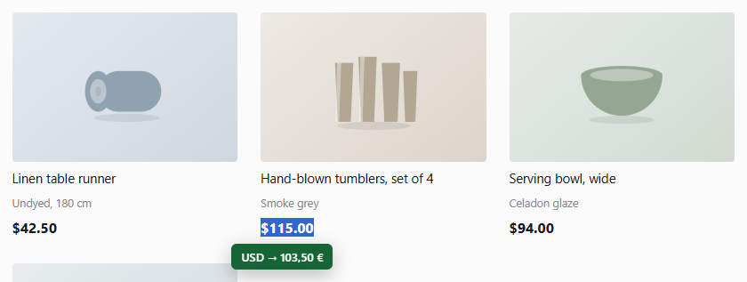

GHIDUL DE UTILIZARE TWINPRICE
Cum convertești prețurile de pe site-uri în Chrome și Firefox
Twinprice este o extensie gratuită de browser care convertește prețurile din paginile magazinelor în moneda ta preferată. Instaleaz-o, alege monedele și selectează Convertește prețurile din pagină. Pentru un singur preț, selectează-l împreună cu moneda și dă clic pe Convertește selecția.
Actualizat pe
1. Instalează Twinprice în browser
Deschide pagina Twinprice din Chrome Web Store sau pagina Twinprice de pe Firefox Add-ons și urmează pașii de instalare ai browserului. Nu trebuie să-ți creezi niciun cont Twinprice.
Deschide o pagină web obișnuită de magazin. Folosește meniul de extensii al browserului ca să deschizi Twinprice; fixează-l pe bara de instrumente dacă vrei să ajungi mai repede la el. Accesul la pagini web permite extensiei să găsească prețurile acceptate și să afișeze conversiile. Citește politica de confidențialitate ca să afli cum funcționează permisiunile și cererile de curs valutar.
2. Convertește prețurile de pe toată pagina unui magazin
- Deschide Twinprice din bara de instrumente a browserului.
- La Din, lasă selectat AUTO ca moneda sursă să fie detectată automat sau alege-o tu. Dacă un simbol este ambiguu, selectează manual moneda corectă.
- La În, alege moneda pe care vrei să o vezi. Caută după numele sau codul monedei, cum ar fi EUR sau USD.
- Dă clic pe Convertește prețurile din pagină. Dacă convertorul este dezactivat, butonul se poate numi Pornește și convertește pagina.
Poți folosi și Convertește prețurile din mesajul de pe pagină, când Twinprice găsește un preț acceptat. Cu afișarea alăturată, suma originală rămâne vizibilă lângă conversia ei.

3. Convertește un singur preț selectat
Setează mai întâi moneda țintă în fereastra Twinprice. Apoi selectează un preț pe o pagină web, împreună cu simbolul sau codul monedei — de exemplu, USD 115.00. Dă clic pe butonul albastru Convertește selecția de sub selecție. Rezultatul apare într-un balon verde.
Poți și să dai clic dreapta pe textul selectat și să alegi Convertește prețul selectat. Conversia selecției e utilă când ai nevoie doar de o sumă, fără să convertești restul paginii.

4. Reține setările pentru un magazin preferat
Deschide Opțiuni pagină în fereastra extensiei și pornește Convertește automat acest site. Twinprice reține conversia automată pentru acel site, inclusiv moneda sursă aleasă manual sau alegerea AUTO.
Ca să convertești prețurile de pe toate site-urile fără să fii întrebat, pornește în schimb Convertește automat toate site-urile în Opțiuni pagină. Dacă o oprești, paginile convertite primesc înapoi prețurile originale.
În setările de aspect din fereastra extensiei poți alege culorile și forma prețurilor convertite. Poți și să afișezi prețurile convertite lângă cele originale sau în locul lor.
Twinprice urmează limba browserului tău. Ca să folosești altă limbă dintre cele 21, alege-o la Limbă în Opțiuni pagină.
5. Restabilește prețurile sau oprește conversia
După ce ai convertit o pagină, deschide fereastra extensiei și selectează Restabilește prețurile originale ca să anulezi conversiile. Ca să oprești conversia automată în acel magazin, oprește Convertește automat acest site în Opțiuni pagină.
Ca să oprești peste tot căutarea prețurilor, mesajele și conversia automată, oprește Activează convertorul.
Exemple practice pentru cumpărături din străinătate
Aceste exemple arată cum alegi monedele și cum interpretezi o conversie. Toate cursurile de mai jos sunt inventate, pentru ilustrare; extensia folosește cursul disponibil de la furnizorul ei.
Cum văd în zloți polonezi un preț în euro?
Pentru un magazin care încasează în euro, alege Din: EUR și În: PLN, apoi dă clic pe Convertește prețurile din pagină. Dacă o lampă costă 89 € și cursul de exemplu este 4,30 PLN pentru 1 EUR, prețul ei convertit este 382,70 PLN (89 × 4,30). Păstrează originalul vizibil ca să compari suma magazinului cu estimarea în moneda ta.
Ca să convertești doar prețul acelei lămpi, setează PLN ca monedă țintă, selectează prețul împreună cu € sau EUR și dă clic pe Convertește selecția.
Un simbol de dolar înseamnă întotdeauna dolari americani?
Nu. USD, CAD, AUD și alte monede folosesc simbolul dolarului. Verifică moneda în selectorul de monede al magazinului sau în informațiile de plată. Pentru un produs listat în dolari canadieni, alege Din: CAD, chiar dacă prețul afișat este doar $100. Dacă alegi USD, se va folosi altă pereche valutară.
AUTO folosește contextul valutar al paginii. Dacă rezultatul nu e clar, alege manual moneda sursă. Când un magazin îți permite să schimbi moneda afișată, potrivește moneda sursă din Twinprice cu moneda afișată acum pe pagină.
De ce suma încasată diferă de conversia Twinprice?
Twinprice estimează un preț pentru comparație, folosind un curs de schimb de referință. Nu schimbă prețul magazinului și nu stabilește cursul folosit de banca ta, de emitentul cardului sau de serviciul de plată. Livrarea, taxele, marjele de conversie și alte comisioane pot schimba totalul final.
De exemplu, la un curs inventat de 0,90 EUR pentru 1 USD, un produs de 100 USD costă 90 EUR. Un comision ipotetic de conversie de 3% din această sumă ar adăuga 2,70 EUR, adică 92,70 EUR înainte de orice alte costuri. Conversia de preț din Twinprice nu calculează acest comision. Verifică totalul final din magazin și condițiile furnizorului tău de plăți pentru suma pe care o vei plăti.
Cum compar prețurile din două magazine?
Folosește aceeași monedă țintă pe ambele site-uri, dar alege moneda sursă corectă pentru fiecare magazin. Convertește prețurile produselor, apoi compară totalurile finale, cu livrare și taxe. Un produs cu un preț convertit mai mic poate costa, în total, mai mult.
Dacă vrei doar să compari sume pe care le știi deja, introdu una în câmpul Sumă din fereastra extensiei. Alege mai întâi o monedă sursă explicită dacă AUTO nu a identificat-o.
Pot converti prețuri fără conexiune la internet?
Cursurile recente din memoria cache pot permite o conversie când nu există un curs nou. Asta depinde de existența unui curs utilizabil în cache pentru monedele cerute; nu este garantat că Twinprice funcționează complet offline. Extensia avertizează când cursurile din cache depășesc 48 de ore și nu folosește cursuri mai vechi de șapte zile.
Vezi de unde provin cursurile și limitările produsului legate de browsere și monede.
Dacă un preț nu se convertește
- AUTO nu poate identifica moneda
- Un simbol precum $ poate desemna mai multe monede. Alege moneda magazinului la Din și încearcă din nou. Pentru un preț selectat, include codul monedei când apare în textul paginii.
- Nu se întâmplă nimic pe o pagină de setări a browserului sau într-un magazin de extensii
- Browserele restricționează accesul extensiilor la acele pagini. Încearcă o pagină web obișnuită de magazin și verifică dacă Twinprice este activat și are acces la acel site.
- Unele prețuri rămân neschimbate
- Twinprice funcționează cu textul acceptat din paginile web. Prețurile din imagini, din cadre inaccesibile sau din așezări neobișnuite s-ar putea să nu fie detectate. Încearcă să selectezi un preț scris ca text sau să introduci suma în fereastra extensiei.
- O pereche valutară sau un curs nou nu este disponibil
- Perechile disponibile depind de furnizorul de cursuri de schimb. Verifică conexiunea și monedele alese, apoi încearcă din nou. Twinprice poate folosi cursuri recente din memoria cache; avertizează după 48 de ore și nu folosește cursuri mai vechi de șapte zile.
- Prețurile unui magazin nu sunt recunoscute deloc
- Când Twinprice nu poate converti o pagină, mesajul său și fereastra extensiei oferă Raportează acest site. Dacă apeși, se trimite doar numele site-ului, de exemplu shop.example, ca suportul pentru el să poată fi adăugat. Nu se trimite nimic dacă nu apeși.
- Totalul de la plată diferă de conversie
- Twinprice folosește cursurile de referință Frankfurter ca să te ajute să compari prețuri. O bancă, un emitent de card sau un serviciu de plată poate aplica un alt curs și poate adăuga comisioane. Suma convertită nu schimbă cât încasează magazinul.
Tot nu merge? Raportează o problemă pe GitHub, cu browserul, versiunea Twinprice și un exemplu reproductibil. Nu include detalii personale de comandă sau de plată.